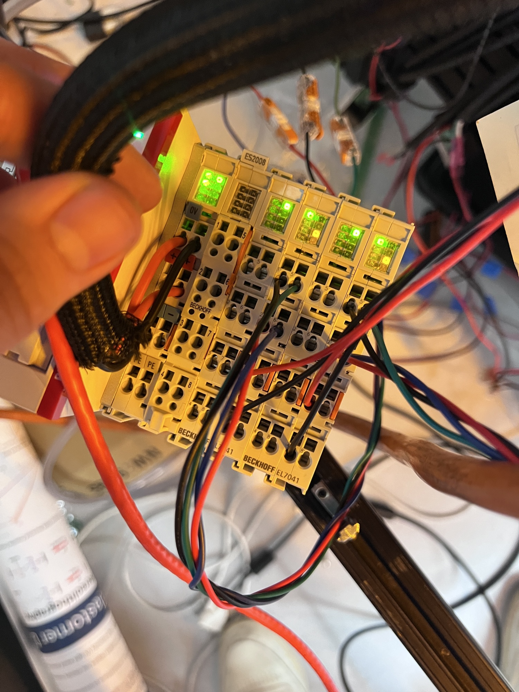
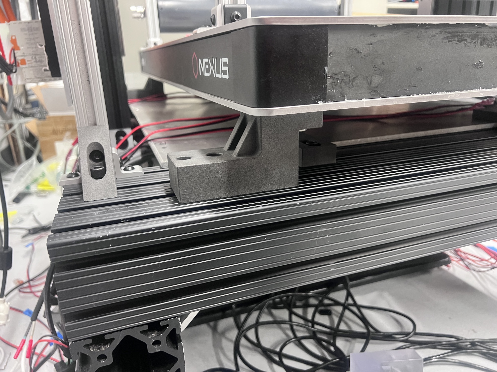
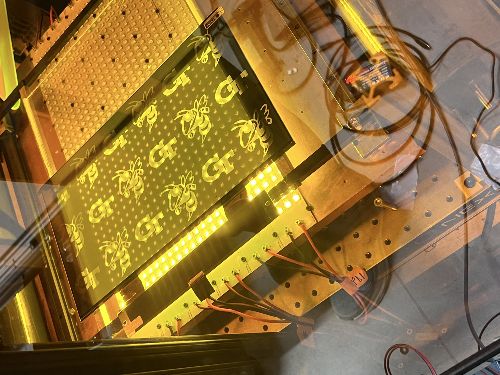
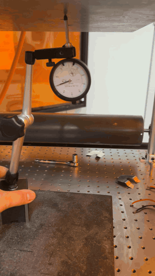
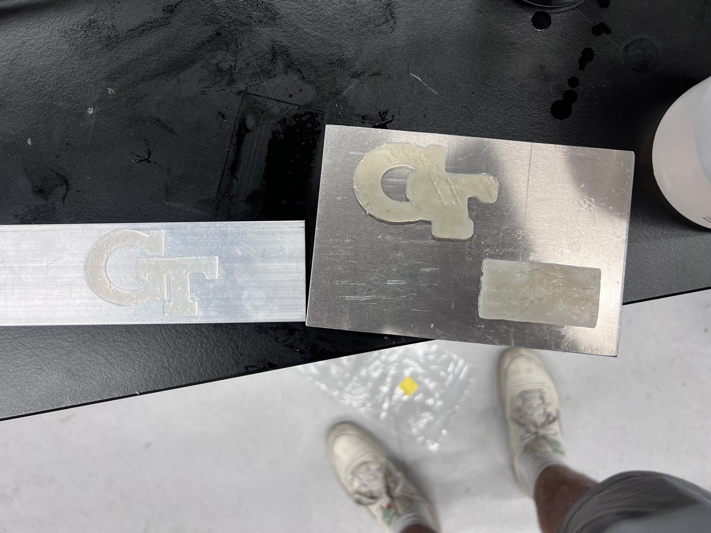
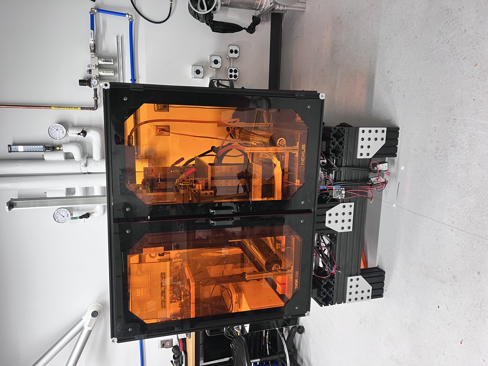

HV-VPP stands for high-viscosity vat photopolymerization — a 3D printing process that cures liquid resin into solid layers with UV light, masked through an LCD panel that acts as a different stencil for every slice. Standard resin printers assume a thin, free-flowing resin; this machine is built to handle much thicker, higher-viscosity material instead, which changes almost everything about how you have to recoat and level each layer.
I joined the lab's build of this printer from close to zero and left with a working (if imperfect) machine. My part of it split into two halves: writing the entire PLC controls framework that runs the printer, and designing, machining, and assembling a large share of the mechanical hardware itself — the Z-axis and build-plate mount, the frame rigidization, the roller and servo couplers, and more.
Bringing The Controls Online
The printer runs on a Beckhoff PLC programmed in TwinCAT. Getting there took a while: the Z-axis servo first got stuck refusing to leave "ready for operation" over a wiring issue, and once it moved, I had it running through the industrial controller as a EtherCAT "slave" — still dependent on a separate host computer. I reconfigured it to run as the "master" instead, so the controller itself drives the Z-axis and every other motor and actuator directly.
Scaling that up meant swapping bus terminals as the current draw grew — an EL7031 stepper driver maxed out at 1.5 A, so I moved the steppers to an EL7041 rated for 5 A, alongside an EK1100 EtherCAT coupler tying the whole bus together.

Building The Mechanical System
On the hardware side, the printer's optical breadboard needed to be rigidly tied to the frame instead of sitting on adjustable stands. I designed a standoff to do that, ran an FEA pass on it (400 lbf total load, static and buckling), and iterated the manufacturing method — CAD, then SLA-printed (which warped under UV), then finally SLS nylon, machined afterward for flatness.
Elsewhere, I machined the servo and roller couplers out of 303 stainless — one bore had to come down to a 0.5005" interference fit by hand on the lathe to actually clamp — and built the gauge blocks used to align all the recoating rollers in-plane, with dovetails so they could be pulled out for machine maintenance.

UV & LCD Masking
Each of the printer's UV power supplies dims over a 0–10V signal, but the PLC output couldn't produce that range cleanly — an existing dimmer would only drop to 1V, which the supplies read as "auto on" and refused to turn off. Adding an EL4001 bus adapter let the PLC drive the 0–10V line directly and fixed it for all ten supplies at once. The LCD masking panels came up separately and are now driving per-layer masks under TwinCAT.


Tramming & First Prints
Once the frame was rigidized, the build plate was still about 1° out of plane with the breadboard, which measured flat to within 0.01–0.02° on its own. Shimming the standoffs closed that gap and got the plate trammed to the vat.
On print day, at roughly 0.5mm layers and a 1-minute cure, we tried about six times — every attempt failed at first-layer build-plate adhesion. Honest state of it: it prints, but reliable adhesion is still open future work, along with a proper load-distribution plate and a Z-axis homing quirk in the PLC logic.


Built alongside Roxy Carbonell, Matt McCoy, and Keenan Vaughn, under Dr. Seepersad at the Digital Design & Manufacturing Lab.